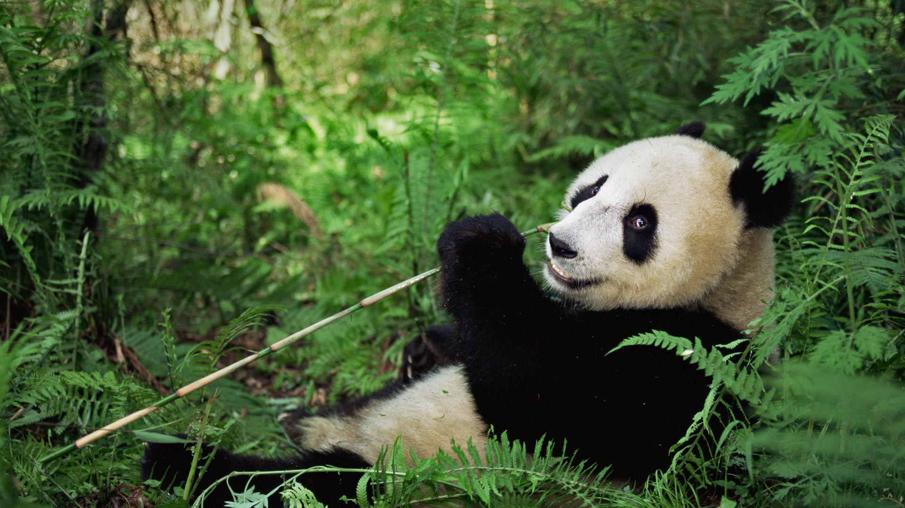

Panda

Click on the picture for a step-by-step guide
Interesting facts about pandas:
- The jaw and cheek muscles on a giant panda are so powerful that they can chew up an aluminum can into small pieces.
They can also bite through bamboo stalks that are so thick that humans have a hard time cutting them with an axe.
- The most significant threat to the survival of the panda species is poaching and losing their habitats.
- The skin of a panda matches their fur. That means that where their fur is black, the skin underneath is also black.
The area where the fur is white, the skin underneath is also white.
- Pandas cost five times as much as an elephant to keep in a zoo.
That makes them the most expensive animal to keep in captivity.
- Since pandas are not able to store fat, they don't actually hibernate.